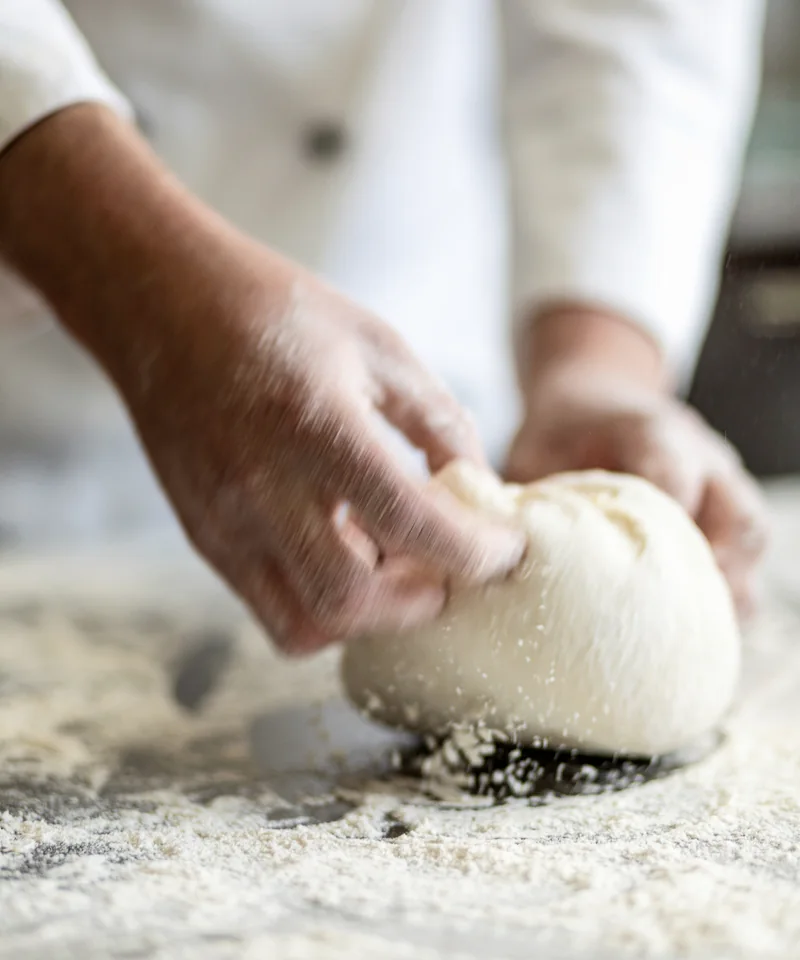
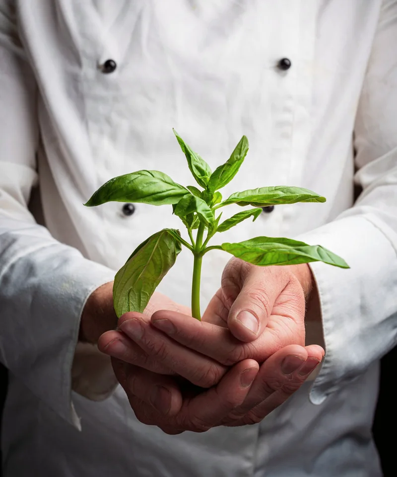
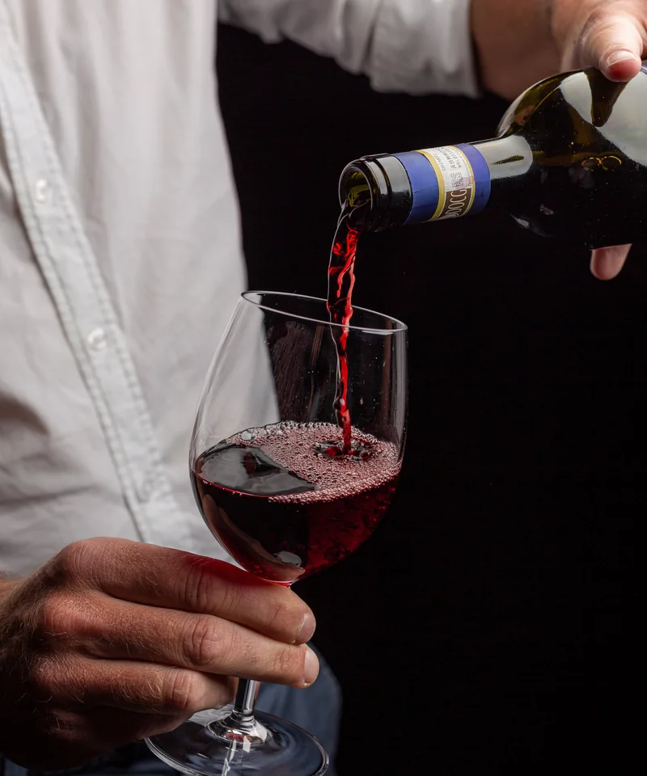
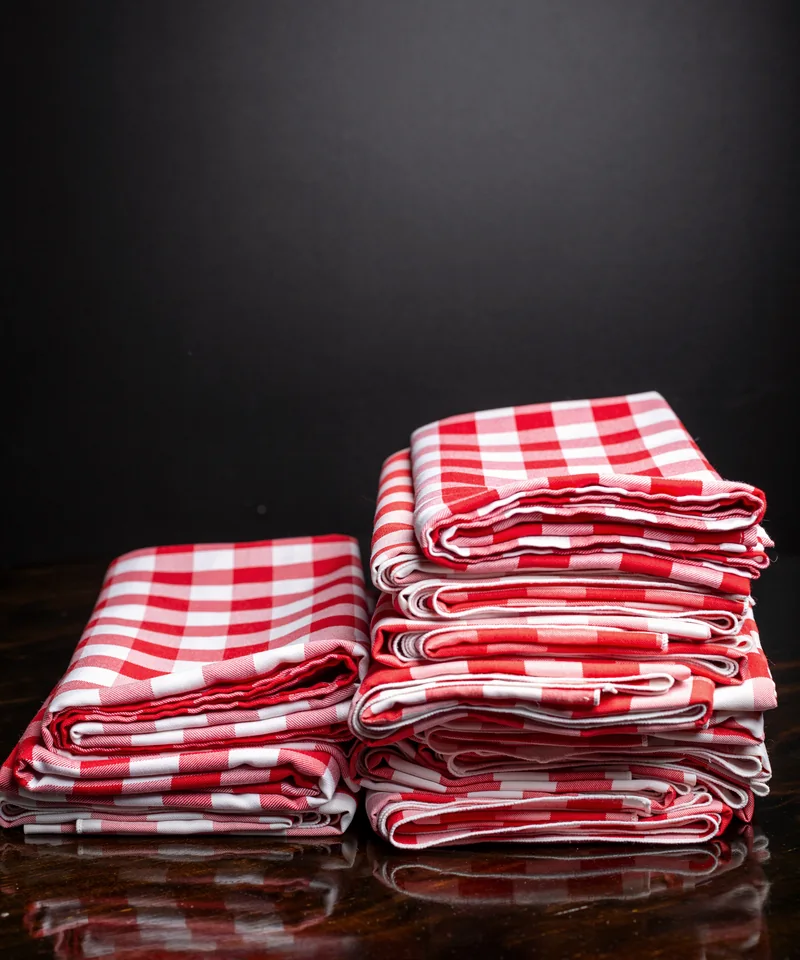

Made by hand
Italian craft begins before the plate reaches the table.
Hobart’s longest-running restaurant
Traditional Italian flavour, fresh local produce and the kind of genuine hospitality that becomes part of a city’s story.

Still setting the table
Don Camillo opened in December 1965, when Hobart had only a handful of restaurants. Locals still remember the queue curling around Magnet Court and limoncello offered while they waited.
The Di Martino family took over in 2002, carrying forward a family culture shaped by generations of Tasmanian Italian hospitality.
Umberto Tucceri opens Don Camillo in Sandy Bay.
The Di Martino family becomes steward of Hobart’s long-running dining room.
Traditional Italian ideas meet Tasmanian produce and seasoned service.
The pleasures that last
The experience is built from simple things done with care: fresh produce, traditional technique, a considered bottle and a table ready for company.

Italian craft begins before the plate reaches the table.

Italian and Australian wines for the evening.

A dining-room signature, ready night after night.
The evening starts here
Find Don Camillo at 5 Magnet Court in Sandy Bay. Dinner begins from 5:30pm and lunch is by appointment.
Because official pages list different specific operating days, use the live online reservation calendar before making a special trip.
From 5:30pm
Confirm live availability online
By appointment
A 10% surcharge applies to cover penalty rates.